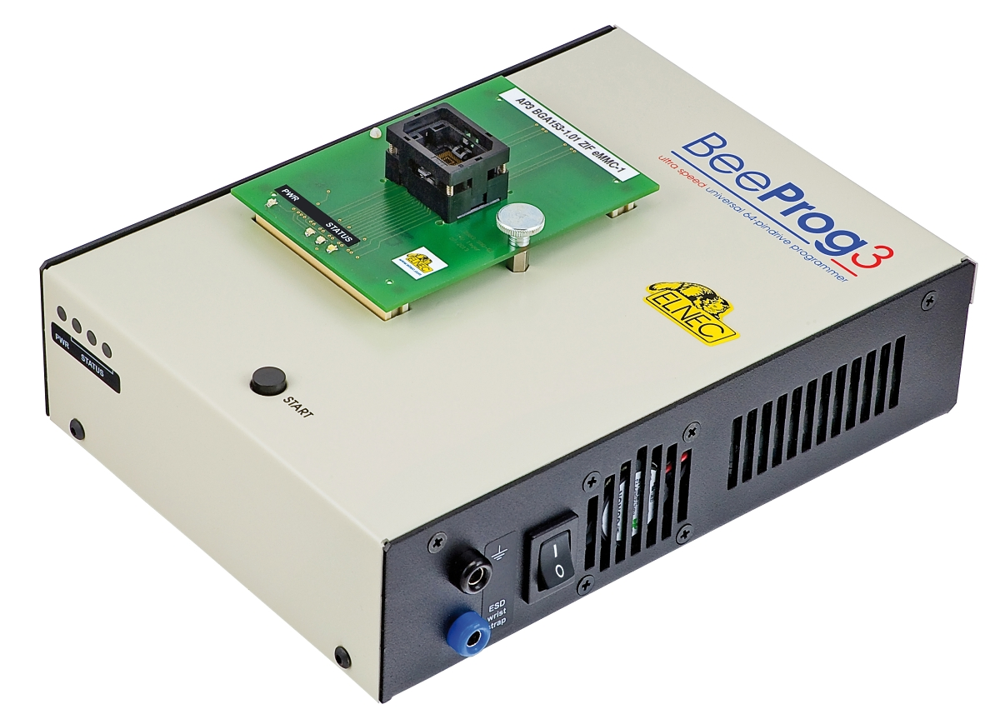

Universal Programmer
-

BeeProg3
-
unterstützte Geräte von
Herstellern
durch SW-Version ()
-
ultraschnelles Programmiergerät mit USB/LAN-Schnittstelle
- 64-poliger präziser und leistungsstarker Pindriver
- kostenloses lebenslanges Software-Update
- Garantie - 3 Jahre
-
BeeProg2
-
unterstützte Geräte von
Herstellern durch
SW-Version ()
-
extrem schnelles Programmiergerät mit USB/LPT-Schnittstelle
- kostenloses lebenslanges Software-Update
- Für alle DIL-Geräte ist kein Adapter erforderlich.
- ISP-Fähigkeit
- Garantie - 3 Jahre
-
BeeProg2C
-
unterstützte Geräte
von Herstellern
durch SW-Version ()
- sehr schnelles Programmiergerät mit USB-Schnittstelle
- kostenloses lebenslanges Software-Update
- Für alle DIL-Geräte ist kein Adapter erforderlich.
- ISP-Fähigkeit
- Garantie - 3 Jahre
-
BeeProg2AP
-
Industrieversion des Programmiergeräts BeeProg2 für den
Einsatz in Programmierautomaten
- extrem schnelle Programmierung
-
universelles Programmiermodul (basierend auf BeeProg2) in
einem Gerät
- ISP-Fähigkeit
- Garantie - 3 Jahre